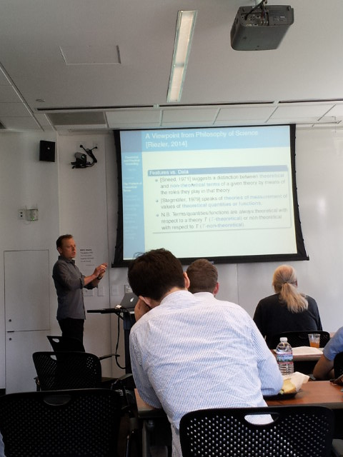

Two years ago, when I finally got my first smartphone, I downloaded a free game, Temple Run, and quickly became a bit obsessed with it.
This was the first computer game I had played in twenty years, actually; although in college I played a fair number of games (including actual physical arcade games in the basement of the college dining hall), including Dark Castle, which I commandeered friends’ Macs to play (I owned only an Apple IIe in college, for word processing purposes), the last time I played computer games was in grad school twenty years ago, when I conquered a Mac game called “Kung Fu Chivalry”. Somehow, after actually winning that game, I totally lost interest in playing computer games again (despite being annoyed about never finishing “Beyond Dark Castle”).
I noticed that my reaction time and coordination were quite rusty after twenty years away from this kind of game, and was determined to get good at Temple Run. I was really bad for a while, but then everything started falling into place, and I got good enough that I got a bit bored. I forgot about the game for a long time.
Months later, Temple Run 2 came out, and I got that, and deleted the original Temple Run. The graphics were much better and the action was more interesting, but again, I got good enough that I got bored. Eventually I stopped playing the game. It’s probably been almost a year since I last played it, actually.
But I still had it on my phone, just in case I got “bored” or wanted to check up on my reaction time to see if I had retained my improvements. I never did end up playing it again though. Finally, I just deleted it, to free up space on my phone and to commit to saying goodbye to the game.
Thoughts flashed through my mind as I deleted the game.
I saw an announcement for a lunch talk at CMU with the intriguing title “Theoretical and Practical Grounding in Empirical Computational Linguistics”, by Stefan Riezler of Heidelberg University.
Abstract: Philosophy of science has pointed out a circularity problem in empirical sciences that arises if all known measuring procedures for a quantity of a theory presuppose the validity of this theory. We discuss how this problem relates to empirical computational linguistics, and define a criterion of T-non-theoretical grounding as guidance to avoid such circularities. We exemplify how this criterion can be met by crowdsourcing, task-related data annotation, or data in the wild. In particular, we illustrate the benefits of grounded learning in the area of statistical machine translation, e.g., by grounding machine translation in semantic parsing and in cross-lingual information retrieval.

I attended the talk because of my long-standing interest in the philosophy of science, a subject I spent a lot of time studying in college (although my degree was in physics).
May 11, 2014 · 1 minute read · Comments hikingFrick ParkPittsburgh
Abby and I had planned to go on a hike yesterday, but rain discouraged us, plus we had a late start to the day, and we were planning to check out part of the Bach Festival in Pittsburgh anyway (and did). This afternoon, it was nice and clear, so we did a little exploratory hike in Frick Park.
A little stream crossing:
Poison ivy lurks everywhere:
A bridge that has gotten lopsided:
Read On →
I saw an interesting article recently, “Why the Mona Lisa stands out”. Read it! The summary of the article is that research has shown that the “mere-exposure” psychological effect really matters in determining what gets popular or gets considered “great”, so that these evaluations are not based entirely on “intrinsic” merits.
It’s birthday time for Tchaikovsky. Actually, it’s also Brahms’s birthday, which I celebrated last year. But this year I decided to do something I’ve been thinking about doing for probably twenty years now: I’m “coming out” as one who has loved his music for a long time now and will continue to love it.
Why have I been relatively silent, even “closeted”, about being a Tchaikovsky fan?
Abby and I went on our first hike at Coopers Rock State Forest, joining a Pittsburgh hiking meetup event led by Terri and Jeff. This is a regularly held hike that we simply never got around to in previous years because of schedule conflicts or other circumstances, so we were delighted to have the opportunity to go this time.
I’d only been to Coopers Rock once, as part of a rock climbing trip, which turned out to be an embarrassing disaster for me, because after climbing only a few minutes, I decided the whole thing just made me nervous, and I sat out the rest of the day. But I was there long enough to see how beautiful the area was, and knew I wanted to go back just to hike, not to climb!
We had a great turnout again for the monthly meeting of the Pittsburgh Recorder Society. We even got an enthusiastic new member, Andriy. There were around fifteen of us, total; we really filled the room!
Our director Fred was inspirational again, encouraging and helping us to continue to refine our sound, our unity, our expression.
Every month, attending the Sunday recorder meeting is truly one of the things I look forward to most in life! Sometimes I feel emotionally naked and a bit anxious in our meetings, but I know that this is a safe place to grow and to contribute. Today was one of those days in which I really felt challenged to do my very best to make music together.